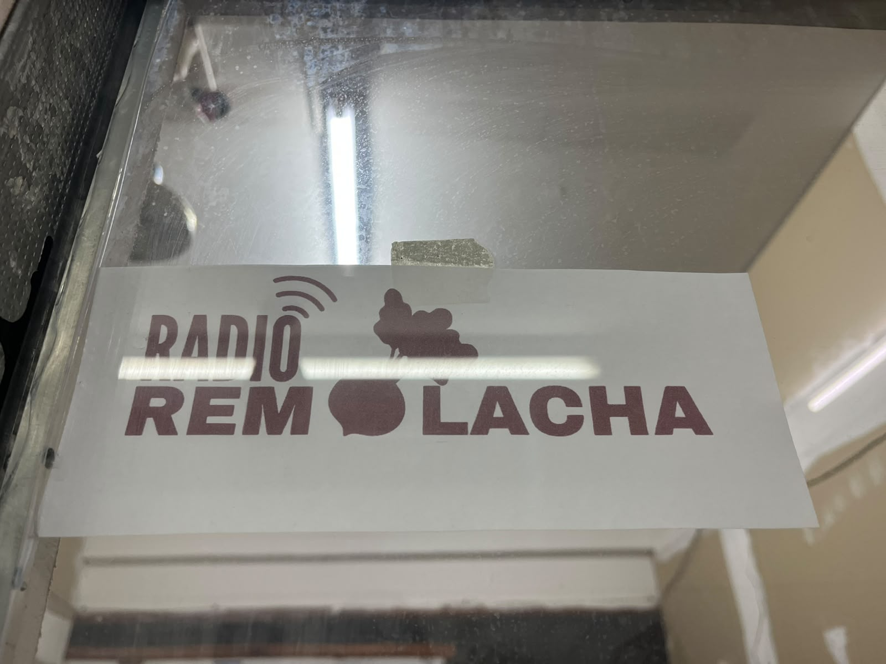
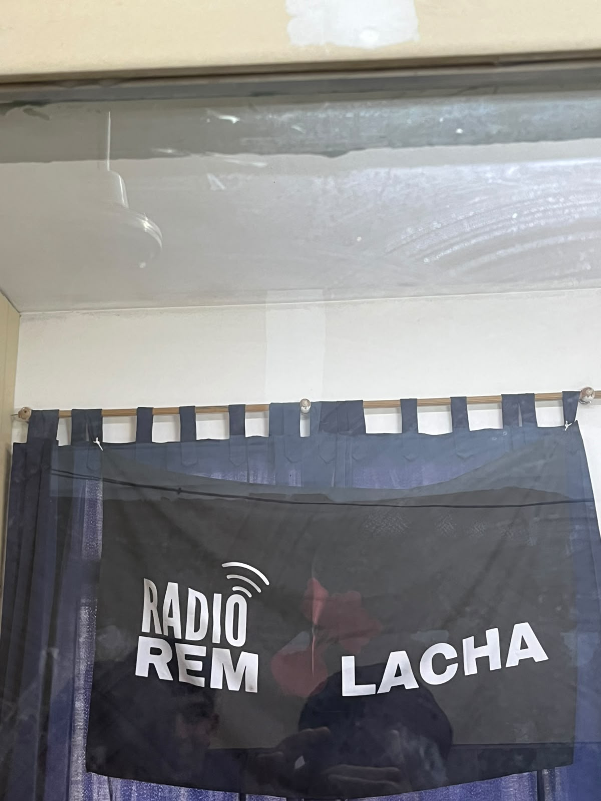

Crear contenidos
Investigar temas, escribir guiones, preparar entrevistas y elegir formatos para comunicar.
Un espacio donde la comunicación, la creatividad y el protagonismo estudiantil se encuentran.
Radio Remolacha es un proyecto de comunicación escolar que invita a los estudiantes a expresar ideas, elaborar contenidos y compartir experiencias con su comunidad. La producción radial fortalece la expresión oral, la investigación, la escucha activa y el trabajo colaborativo.
A través de este espacio, los jóvenes descubren cómo planificar un programa, organizar roles, desarrollar entrevistas y comunicar con responsabilidad.
Conocer Radio Remolacha
Investigar temas, escribir guiones, preparar entrevistas y elegir formatos para comunicar.
Distribuir responsabilidades, coordinar tiempos y respetar distintas voces y opiniones.
Acercar experiencias de la escuela a las familias y promover el intercambio con otros espacios.
En 2026, el proyecto Radio Remolacha Rock participó en la instancia final de Sueños de Radio, una iniciativa de Cadena 3. La experiencia permitió compartir el trabajo realizado en la escuela y fortalecer las habilidades comunicativas de sus participantes.
Más allá de la competencia, el valor de la propuesta está en las capacidades desarrolladas por los estudiantes y en la posibilidad de representar a la comunidad educativa.
Ver el proyecto radial
Las novedades y producciones se comparten por los canales del proyecto.